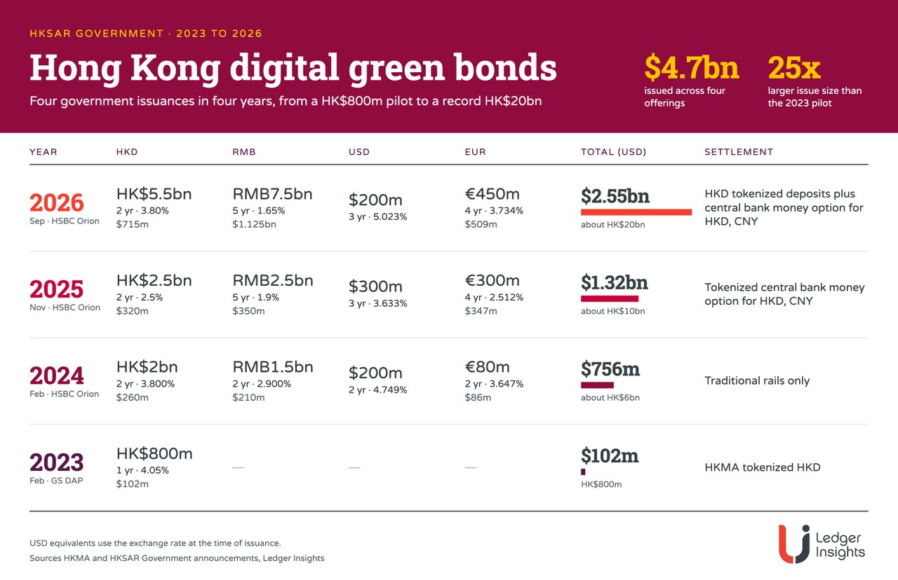

04 Ledger Insights 보도일 2026.10.02
홍콩, 200억 홍콩달러 디지털 그린본드 발행

홍콩 정부가 디지털 채권 발행 규모를 다시 키웠다. 이번 발행의 새 점은 규모만이 아니다. 홍콩달러 물량의 1차 결제에 토큰화 예금을 넣었다. 한 발행 안에서 기존 결제망과 토큰화 중앙은행화폐, 토큰화 예금을 함께 쓴 첫 구조다.
무슨 일이 있었나
홍콩 정부는 약 200억 홍콩달러 규모의 디지털 그린본드를 발행했다. 미화로는 25억5천만달러 수준이다. 이번 발행은 홍콩 정부의 네 번째 디지털 그린본드다.
가장 눈에 띄는 변화는 결제 방식이다. 홍콩달러 물량의 1차 결제에 EnsembleTX 플랫폼의 토큰화 예금을 넣었다. 투자자는 세 가지 결제 방식을 고를 수 있다.
- 기존 결제망
- 토큰화 중앙은행화폐
- 토큰화 예금
이번 발행은 HSBC 오리온 플랫폼을 썼다. 이 플랫폼은 중앙예탁결제기구CSD — 증권 보관과 권리 이전, 결제를 맡는 인프라인 CMU와 연동돼 있다.
왜 지금 나왔나
홍콩은 2023년부터 디지털 채권을 해마다 발행해 왔다. 규모는 2023년 1억달러에서 이번 발행까지 크게 늘었다. 이번 금액은 2023년의 25배이고, 2025년 발행의 두 배다.
직전 발행에서는 토큰화 중앙은행화폐를 결제에 도입했다. 이번에는 여기에 토큰화 예금을 더해 선택지를 넓혔다.
제도와 시스템에서 바뀌는 것
바뀌는 지점은 1차 결제 구조다. 이제 하나의 디지털 채권 발행에서 세 결제 레일이 병행된다. 기존 결제망만 쓰던 구조에서 벗어나, 중앙은행화폐와 은행 예금 토큰이 같은 거래 틀 안에 함께 들어왔다.
CMU와 연결된 발행 플랫폼을 유지하면서 결제 수단만 확장한 점도 중요하다. 새 토큰 결제 수단을 넣되 중앙예탁 인프라와의 접속은 유지한 설계다.
국내와의 접점
원문은 국내 적용에 대해 언급하지 않았다.
우리 업무로 옮기면
채권 발행·배정·결제 시스템을 만드는 팀은 결제 수단 복수화를 먼저 검토할 만하다. 같은 발행에서 현금 레일이 셋이면, 투자자 선택과 대사 로직이 핵심이 된다.
점검할 항목은 분명하다.
- 발행 시스템이 결제 수단별 배정 결과를 따로 관리할 수 있는지
- 중앙예탁 인프라와 토큰 결제망 사이의 DvPDelivery versus Payment — 증권 이전과 대금 지급을 맞교환해 결제 위험을 줄이는 방식 흐름을 어떻게 맞출지
- 예금토큰Tokenized deposits — 은행 예금을 토큰 형태로 표현해 결제에 쓰는 수단 결제 실패 때 기존 결제망으로 되돌리는 절차가 있는지
- 투자자와 수탁기관 화면에 결제 방식 선택 정보를 어떻게 보여줄지
원문은 수수료 구조와 참여 기관별 역할 분담을 자세히 밝히지 않았다. 따라서 국내 도입을 바로 상정하기보다, 다중 결제 레일을 현재 발행·결제 계정계가 감당할 수 있는지부터 따져야 한다.
원문 정보
제목: Hong Kong government issues record $2.55bn digital green bond
보도일: 2026.10.02
출처 URL: https://www.ledgerinsights.com/hong-kong-government-issues-record-2-55bn-digital-green-bond/